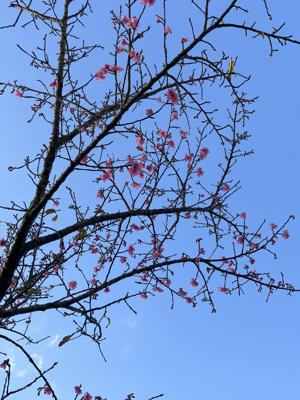
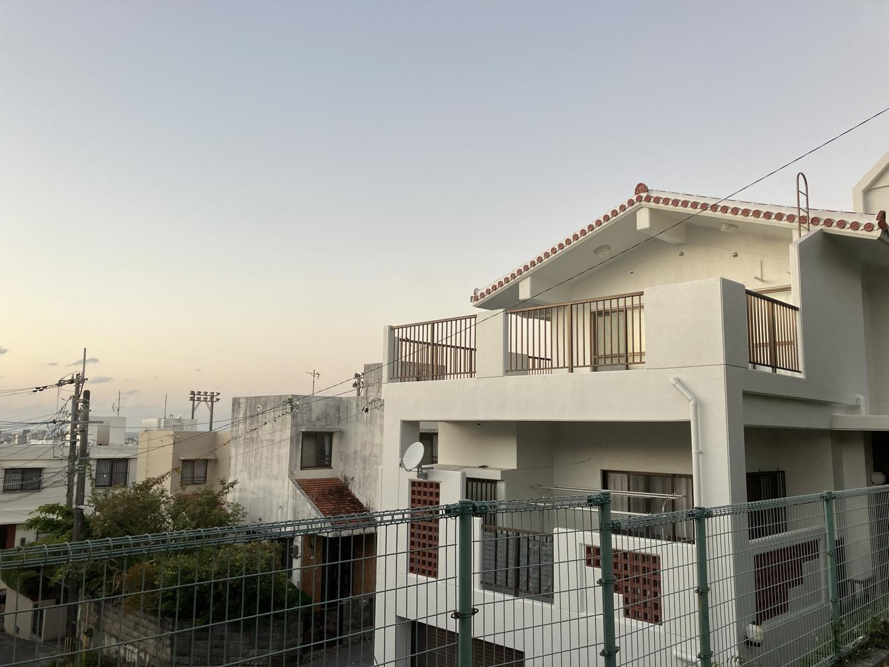

うるがいの話 ある日
最新: AIジェミニを利用した【うるがいの話 ある日】とは 一日だけのプログです
『うるがいの話』の最新一日だけのプログで、通信料が少なく経済的だ。カニの画像をクリックすると全ての日付が載る『うるがいの話』サイトを表示します
|
|
【うるがいの話】 うるがい(ｳﾙｶﾞｲ urugai)とは、『もずくがに』の名前でとても大きくなります。 |
|---|---|
|
|
【カミマヤーの話】 猫のことを方言でマヤーといいます。カミマヤー（kamimayaa）とは、神の猫のことです。 |
|
【たながぁの音楽】 たながぁ（ﾀﾅｶﾞｰ tanagaa）とは手長えびのことで、何種類かあり大きいのは車 エビぐらいになります。 |

|
【ぶながぁの話】 ぶながぁ(ﾌﾞﾅｶﾞｰ bunagaa)とは、赤い髪の毛、赤い身体、そして身長は１ｍ２０ｃｍ ぐらい、川の蟹を食べているの目撃された。場所は沖縄県国頭郡大宜味村のと ある村僕の隣近所に住んでいる爺さんから、聞いた話です。 |
|
|
【ギーマの話】 ギーマ(giima)とは、山原の里山に咲くスズランに似た、 花を付けます。実は食べられます、 気が付くと口の周りが紫になっています。 |
2026年01月30日 (金）AIジェミニを利用した
16:21
夕方、庭で水を撒く。青い空のもと桜の花が綺麗に見えた。写真
を撮る。

空が、あまりにも青くて・・、そうだ師匠が話していたジェミニ
を利用してみるべと、やってみた。マア、まあ、この程度だとア
ドビのＰｈｏｔｏｓｈｏｐでもできるはずだが、なんせ暫く使っ
てないので、マ、いいか。

近所の塗装工事が、やっと終わる。昨年の末で終わる予定だった
が、ひと月遅れである。
